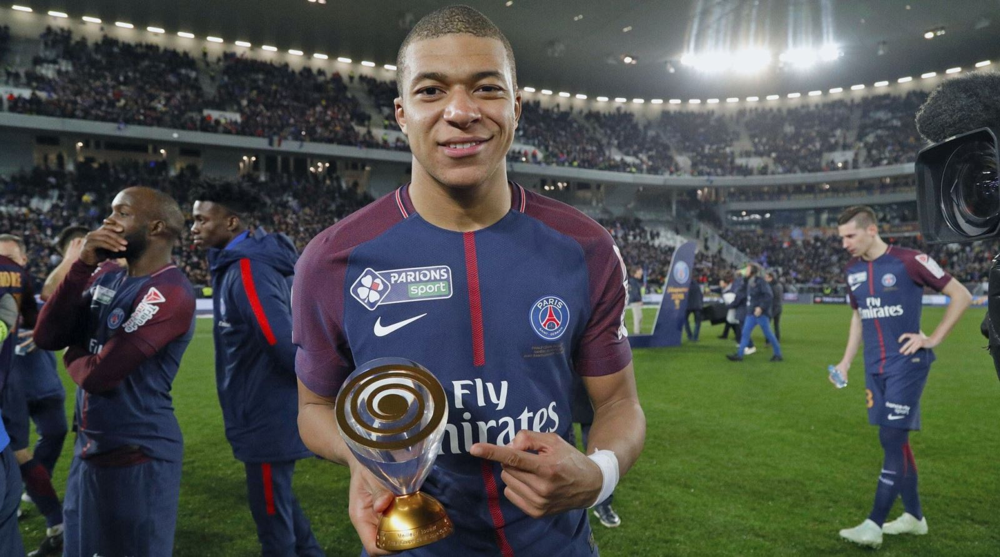

Chương 16
Ba câu hỏi bật ra cùng một lúc. Câu hỏi đầu tiên phù phiếm nhất nhưng cũng hài hước nhất: Nên gọi bộ ba tấn công mới bằng cái tên nào? Có thể miêu tả bộ ba kỳ diệu này như thế nào? Đâu là cái tên chuẩn nhất cho hàng công mới của PSG? Liệu có thể tìm ra một biệt danh thích hợp cho Neymar, Cavani và Mbappé? Có thể dùng từ gì để mô tả gói gọn hàng công bùng nổ ấy?
Ngay từ khoảnh khắc Kylian đặt chân tới PSG, chủ đề trên đã được mang ra mổ xẻ, nghiêm túc có, mà không nghiêm túc cũng có. Người ta nghĩ ra đủ cách gọi tên. MCN là giải pháp dễ dàng nhất, vì nó tương đồng với cách gọi những hàng công mới nổi lên trong những năm gần đây như bộ ba BBC (Bale, Benzema, Cristiano Ronaldo) của Real Madrid và MSN (Messi, Neymar, Suárez) của Barcelona. Nhưng MCN lại không được dễ nhớ cho lắm, không như BBC (”ăn theo” tên của hãng thông tấn Anh BBC - British Broadcasting Corporation) hay MSN (theo tên cổng thông tin điện tử của Microsoft). MCN có thể được hiểu thành Maritime Campus Netherlands hoặc Montage Cable Network, một kênh truyền hình ở tận Phi châu. Nói cách khác là chẳng có gì đặc biệt. Rồi một gợi ý khác được đưa ra: KEN. Ngoài thực tế là cách gọi này không được đồng nhất vì sử dụng 2 tên và 1 họ, nó cũng lập tức khiến người nghe liên tưởng tới Ken, bạn trai của cô nàng búp bê Barbie. Đó đều là những cách viết tắt đơn giản, nhưng có lẽ tốt hơn hết là không nên đặt ra các giới hạn cho trí tưởng tượng. Vì Mbappé đã được đặt cho biệt danh là Donatello, một số người gợi ý gọi cả ba ngôi sao theo tên của các nhân vật trong bộ Ninja Rùa. Nhưng vấn đề là có tới bốn chàng Ninja Rùa, và trừ Kylian, những người còn lại không có ai trông giống Michelangelo, Raphael hay Leonardo cả. Một số khác thì đề nghị gọi họ là ba chàng lính ngự lâm như trong tác phẩm cùng tên của Alexandre Dumas cho có “chất Pháp”. Ý tưởng rất hay, nhưng ai sẽ là D’Artagnan? Và ngoài ra, biệt danh đó đã được sử dụng rồi. Thể thao Pháp từng có bộ tứ lính ngự lâm “Four Musketeers” nổi tiếng là Jean Borotra, Jacques Brugnon, Henri Cochet và René Lacoste, những vận động viên tennis đã cùng nhau vô địch Davis Cup 6 lần liên tiếp từ 1927 tới 1932. Những gợi ý vẫn còn rất nhiều, nghiêm túc có mà hài hước cũng có: Bộ ba bất tử, Những hiệp sĩ diệt vong, Ba giọng nam cao, 9-10-29, Bộ ba trong mơ, hay Bộ ba thần thánh... Nhưng cuối cùng, MCN đã được chọn. Hoặc là như thế, hoặc đơn giản là Mbappé-Cavani-Neymar, với một dấu gạch ngang giữa tên của ba người.
 .
.
 .
.
Giờ tới câu hỏi thứ hai. Đây là một câu hỏi thực sự nghiêm túc. Liệu MCN có thể trở thành bộ ba tấn công hay nhất thế giới hay không? Chỉ sau 6 trận họ chơi bóng cùng nhau, câu trả lời chỉ có thể là “có”.
Chi tiết những gì đã diễn ra ở cả Ligue 1 lẫn Champions League là như sau... Gặp Metz (5-1), trận đầu tiên chơi cùng nhau, họ ghi được 3 bàn (Cavani 2, Mbappé 1). Vào ngày 12/9, trong trận đấu đầu tiên của vòng bảng Champions League ở Celtic Park tại Glasgow, cả ba lại có một màn trình diễn xuất sắc. Với 5 bàn thua, Celtic đã phải nhận thất bại đậm nhất trên sân nhà trong lịch sử những lần dự các cúp châu Âu. Neymar là người khơi mào, Kylian tiếp bước. Cầu thủ mang áo số 29 là người ghi bàn thắng thứ 2 cho PSG sau một đường chuyền bằng đầu của số 10. Cavani chịu trách nhiệm khiến cho tình cảnh của đội chủ nhà thêm thê thảm khi ghi bàn từ chấm 11m, trước khi ghi thêm một bàn nữa bằng đầu ở cuối trận. Mikael Lustig cũng góp một tay trong chiến thắng của PSG khi ghi bàn thắng thứ tư cho đội bóng Pháp với một pha... phản lưới. MCN đã có 6 bàn chỉ sau 2 trận.

.Trở lại Ligue 1, họ đối đầu với Olympique Lyonnais, đối thủ nặng ký đầu tiên, vào ngày 17/9. Trận đó, không có ai trong bộ ba ghi bàn. Nhưng PSG vẫn thắng 2-0 nhờ công của Marcelo và Jérémy Morel. Cả hai bàn đều là những pha phản lưới. Bàn đầu tiên xuất phát từ Cavani (Marcelo đưa bóng vào lưới sau pha dứt điểm của cầu thủ người Uruguay). Bàn thứ hai từ một cú sút của Mbappé, bóng đập vào chân Anthony Lopes rồi lại vào chân Morel trước khi bay vào lưới. Một tình huống đáng kể khác là El Matador đã đưa bóng dội xà ngang khi thực hiện quả penalty do Kylian kiếm được. Ngày 23/9, Neymar bỏ lỡ trận đấu với Montpellier vì chấn thương. Trận đấu kết thúc với tỉ số 0-0. Đó là trận hòa đầu tiên của đội bóng thành Paris sau 6 chiến thắng liên tiếp. Tuy nhiên, nỗi buồn nhanh chóng được xoa dịu chỉ sau 4 ngày, trong trận đấu trên sân Parc des Princes diễn ra vào thứ Tư, 27/9.
Lần này, đối thủ là một trong những đội bóng vĩ đại nhất của Lục địa Già. Bayern Munich của những Thomas Müller, Robert Lewandowski và James Rodríguez. Và trên băng ghế huấn luyện là một lão tướng Champions League khác: Carlo Ancelotti. Với bộ ba của PSG, trận đấu này là một màn thử lửa, một bài kiểm tra hoàn hảo để biết họ hay đến thế nào. Chỉ sau 2 phút, đội bóng tới từ Bavaria đã thấy mình bị tụt lại phía sau. Neymar là người khởi xướng. Từ cánh trái, anh dốc bóng vào thẳng vòng cấm của Bayern, thu hút theo mình một loạt các cầu thủ đối phương. Ở cánh phải, Dani Alves hoàn toàn tự do, không bị ai kèm. Nhận pha chuyền bóng hoàn hảo từ số 10, anh dứt điểm gọn ghẽ đưa bóng qua khe giữa hai chân của thủ thành Ulreich. Phút 31, tới lượt Mbappé có một pha đột phá từ cánh phải vào vòng cấm. Theo sát anh là hai hậu vệ của Bayern. Nhưng bằng một cú xoay người nhẹ nhàng, anh đã khiến cả hai hậu vệ này bị lố đà, rồi chờ cho Cavani vào đúng vị trí thuận lợi để thực hiện một cú trả ngược nhẹ nhàng cho tiền đạo người Uruguay đệm bóng vào lưới. Nhiệm vụ hoàn thành sau một pha phối hợp giữa Kylian và Neymar. Cầu thủ số 29 là người lo hết phần việc nặng nề nhất. Với một cú vê bóng điệu nghệ, anh vượt qua một lúc hai hậu vệ của Bayern, rồi căng ngang vào trong khi thủ môn của đối phương đã lao ra. Bóng đập chân một hậu vệ của Bayern bật ra, và Neymar đã phản ứng nhanh hơn tất cả khi đệm bóng vào lưới trống.
MCN bắt đầu gieo rắc nỗi kinh hoàng ở châu Âu. Nước Pháp thì không phải bàn nữa. Sự vượt trội của PSG được thể hiện rõ trong màn vùi dập Girondins de Bordeaux, đội lúc đó còn đang đứng thứ 3 ở Ligue 1 và chưa phải chịu thất bại nào. Trong trận đấu diễn ra vào ngày 30/9, Bordeaux ghi được 2 bàn thắng, nhưng phải nhận tới 6 bàn thua. Cuộc vui bắt đầu với một cú đá phạt rất ngọt đưa bóng miết mép dưới của xà ngang trước khi làm tung nóc lưới. Tất nhiên, người thực hiện vẫn là Neymar. Tới phút 12, sau một cú đánh gót của Mbappé, ngôi sao người Brazil chuyền bóng thuận lợi để El Matador nâng tỉ số lên 2-0. Bàn thắng thứ ba được ghi do công của Thomas Meunier. Những vị khách tới từ Girondins tìm lại chút hi vọng với bàn rút ngắn tỉ số xuống còn 1-3. Nhưng từ chấm 11m, Neymar nhanh chóng thiết lập lại trật tự. Theo sau là một bàn thắng của Julian Draxler. Chỉ sau 45 phút, tỉ số đã là 5-1. Lần đầu tiên trong lịch sử PSG ghi được nhiều bàn thắng đến vậy trong hiệp 1. Bàn thứ 6 được ghi do công của Kylian, và anh dành tặng nó cho đồng đội cũ Benjamin Mendy, người dính phải một chấn thương đầu gối rất nặng trong trận đấu giữa Man City với Crystal Palace ít ngày trước đó. Vì chấn thương này, Mendy sẽ phải vắng mặt trong toàn bộ phần còn lại của mùa giải. Bàn thắng vừa ghi là pha lập công thứ hai ở Ligue 1 của Kylian trong màu áo PSG. Trong pha ăn mừng, anh nhắc nhở mọi người về điều đó bằng cách giơ hai ngón tay lên.
Đây là thời điểm thích hợp để đánh giá lại những gì mà MCN đã làm được. Thống kê cho thấy, với 14 bàn và 6 pha kiến tạo, họ đã vượt qua thành tích của bộ ba nổi tiếng nhất trong thời gian gần đây - MSN. Messi, Suárez và Neymar, trong mùa giải đầu tiên chơi cùng nhau, mùa 2014-15, đã xô đổ không biết bao nhiêu kỷ lục. Chỉ sau 6 trận - 4 ở La Liga và 2 ở Champions League (Ajax và Hapoel) - họ đã cùng nhau ghi được 12 bàn và 4 pha kiến tạo. Nhưng thế nghĩa là vẫn kém MCN!
Với Mbappé, Cavani và Neymar, mạch chiến thắng của PSG tiếp tục được kéo dài. Ngày 14/10, trong trận đấu trên sân của Dijon, PSG dù gặp khá nhiều khó khăn vẫn giành thắng lợi 2-1 nhờ hai bàn thắng của Thomas Meunier. Cavani không có mặt, Neymar không thể tỏa sáng, còn Mbappé thì hai lần bị Reynet, thủ môn của đối phương, từ chối bàn thắng. Bộ ba siêu sao tái xuất trong trận đấu với đội bóng Bỉ Anderlecht ở Champions League. Chỉ sau 160 giây, Verratti đã kiến tạo cho Kylian ghi bàn với pha dứt điểm sắc như dao cạo. Đó là bàn thắng thứ 8 của anh ở Champions League chỉ sau có 12 trận. Không tồi với một chàng trai trẻ! Làm được tương tự, Mbappé có Karim Benzema, Radamel Falcao và cả Cavani. Khi hiệp 1 sắp kết thúc, bộ ba nam cao lại lĩnh xướng cả dàn nhạc. Từ sát vòng cấm, Neymar tung ra một cú nã rocket. Không biết bằng cách nào, quả bóng bị chặn lại bởi cầu thủ của Anderlecht đã tìm tới đầu của Mbappé, người chuyền cho Cavani nâng tỉ số lên 2-0. Bàn thắng thứ ba được ghi do công của Neymar với một cú sút phạt đưa bóng đi chìm dưới chân hàng rào. Cuối trận, Ángel Di María góp thêm một bàn vào màn trình diễn của MCN.
Cho tới thời điểm đó, PSG chưa để mất điểm nào ở Champions League, và vẫn tiếp tục thống trị ở mặt trận trong nước. Bộ ba MCN vẫn đang ghi bàn như nã đạn, khiến người ta không thể không đặt ra câu hỏi, câu hỏi thứ ba: Liệu họ có thể trở thành một trong những bộ ba tấn công vĩ đại nhất trong lịch sử bóng đá hay không? Để trả lời câu hỏi này, trước hết, hãy nhìn vào những đối thủ mà họ phải vượt qua. Mỗi người đều có những ưu tiên và quan điểm khác nhau, tùy thuộc vào vĩ độ, kinh độ, nơi họ sống, đội bóng mà họ ủng hộ, màu sắc ưa thích, số mùa giải mà họ đã theo dõi, phong cách chơi bóng ưa thích của họ, hay những điều mà họ yêu và ghét. Nhưng có một số bộ ba, dù bạn có đồng ý hay không, luôn được xem như những “cột mốc” đánh dấu một giai đoạn lịch sử của trái bóng tròn.
Nghĩ về bóng đá thời chỉ có màu đen và trắng, làm sao mà chúng ta có thể quên được “Aranycsapat”, đội bóng Vàng, biệt danh được đặt cho đội tuyển quốc gia Hungary trong giai đoạn những năm 1950? Và bộ ba tiền đạo của họ: Ferenc Puskás, Sándor Kocsis và Nándor Hidegkuti? Đó là những người đã đánh bại Anh, đội tuyển của quốc gia luôn tự hào đã phát minh ra bóng đá, với tỉ số 6-3 ngay tại thánh địa Wembley. Và cũng là những người đã thất bại theo một cách không thể giải thích nổi trong trận chung kết World Cup 1954, dưới tay người Đức.
Giai đoạn cuối những năm 1950 chứng kiến sự nổi lên của Didi, Vavá và Pelé, những người Brazil đã khiến cả thế giới phải kinh ngạc ở các kỳ World Cup 1958 và 1962. Edson Arantes do Nascimiento, Pelé, rất mạnh ở khả năng đi bóng và ghi bàn. Didi thì là một chuyên gia chạy cánh. Còn Vavá là một trung phong điển hình. Và đừng quên Garrincha, một ảo thuật gia với đủ chiêu trò. Cũng trong thời gian đó, ở Tây Ban Nha, chính xác là Madrid, xuất hiện một bộ ba cổ tích. Năm 1958, Alfredo di Stéfano, siêu sao người Argentina có biệt danh “Mũi tên Vàng”; Ferenc Puskas, “Thiếu tá kỵ binh” người Hungary; và Paco Gento, cầu thủ chạy cánh người Tây Ban Nha, đã cùng nhau đưa Real Madrid tới chức vô địch Cúp C1 thứ 5 liên tiếp, sau khi đánh bại Eintracht Frankfurt trong trận chung kết.
Ở Anh, vào giữa thập niên 1960, nổi lên Bộ ba Thần thánh của Quỷ Đỏ Man United: George Best, thiên tài gây tranh cãi người Bắc Ireland, Bobby Charlton, một trong những tay săn bàn vĩ đại nhất trong lịch sử Manchester United, và Denis Law, kẻ kết liễu. Ba người đó, mỗi người đều giành Ballon d’Or một lần. Màn hóa thánh của họ chính là trận chung kết Cúp C1 năm 1968, khi họ vùi dập Benfica của Eusebio với tỉ số 4-1. Trước sân Old Trafford hiện đang có một bức tượng của bộ ba này. Không có cổ động viên United nào tới sân mà lại không chụp ảnh dưới bức tượng ấy.
Những năm 1970 là thời của bóng đá tổng lực của Ajax và đội tuyển Hà Lan. Và của bộ ba Johan Cruyff, Johnny Rep và Piet Keizer. Cruyff, người mang áo số 14, là kẻ theo đuổi cái đẹp và được ví von là triết gia với trái bóng. Rep đá tiền đạo phải còn Keizer đá tiền đạo trái trong sơ đồ 4-3-3 của Ajax. Không ai có thể quên, rằng vào ngày 30/5/1973, Rep đã ghi bàn trong trận chung kết với Juventus để mang về chức vô địch Cúp C1 thứ ba liên tiếp cho Ajax. Cũng không ai có thể quên là vào năm 1974, chính bộ ba đó đã đưa Hà Lan vào tới trận chung kết World Cup với đối thủ Tây Đức.
Nhắc tới người Đức, không thể không nói tới bộ ba Uli Hoeness, Gerd Müller và Karl-Heinz Rummenigge lừng lẫy của Bayern Munich trong những năm giữa thập niên 1970. Hai chàng tóc vàng và một chàng tóc nâu (Müller) bắt đầu xé toang các hàng thủ từ năm 1976. Hỗ trợ cho họ không ai khác là “Der Kaiser”, Franz Beckenbauer. Cả Müller lẫn Rummenigge đều giành được Ballon d’Or. Người đầu tiên vào năm 1970, còn người thứ hai vào các năm 1980 và 1981.
Giờ là lúc trở lại với Brazil, nơi chưa bao giờ ngừng sản sinh ra những bộ ba vĩ đại. Ở World Cup 1970 diễn ra tại Mexico, giải đấu mà Canarinho đã vùi dập Italia 4-1 trong trận chung kết, Brazil đã trình làng một bộ ba khác, với Jairzinho, Tostão và Pelé. Tới World Cup 2002 được tổ chức ở Nhật Bản và Hàn Quốc, một bộ ba khác là bộ ba R - Ronaldinho, Rivaldo và Ronaldo - đã bước ra ánh sáng. “Người ngoài hành tinh” Ronaldo giành Chiếc giày Vàng với 8 bàn thắng, Rivaldo ghi được 4 bàn còn Ronaldinho, lúc đó đang chơi cho PSG, ghi được 2. Một trong hai bàn thắng của Ronaldinho là cú đá phạt thần sầu mà thủ môn của đội tuyển Anh David Seaman không bao giờ có thể quên.
Mùa 2003-04, Arsenal của Arsène Wenger đoạt chức vô địch Premier League với thành tích bất bại. Họ cân bằng kỷ lục đã tồn tại từ mùa 1888-89 (do Preston North End lập ra) và từ đó được gọi với biệt danh “Những kẻ bất khả chiến bại”. Trong đội hình của Arsenal ngày ấy cũng có một bộ ba khét tiếng, gồm Robert Pires, Dennis Bergkamp và Thierry Henry, người đoạt ngôi Vua phá lưới với 30 bàn thắng.
Và tới gần đây là MSN. Trong mùa giải đầu tiên chơi bóng cùng nhau, Messi, Suárez và Neymar đã cùng nhau ghi được tới 122 bàn thắng, giúp Barcelona đoạt cú ăn ba vĩ đại với chức vô địch La Liga, Champions League và Cúp Nhà Vua. Trong 3 năm, trước khi Neymar ra đi, họ cùng nhau ghi tới 344 bàn chỉ sau có 135 trận.
Và cuối cùng là BBC. Trong ba mùa giải gần đây, bộ ba này ghi trung bình 100 bàn mỗi mùa, và đã đoạt 2 chức vô địch Champions League liên tiếp.
Liệu Mbappé, viên ngọc nhỏ người Pháp, Neymar, O Rei 2.0, và Cavani, El Matador, có thể tự khắc tên mình vào sách sử bóng đá? Biết đâu đấy?